RESUMEN DE OPINIONES DE INTERNET SOBRE SOL EN GENERAL
Tras una recopilacion sobre sol y las reseñas de internte que hay sobre dicha zona se ve como la
gente lo alaga por ser uno de los centros turisticos mas visitado y con sitios donde venden comida que es tipica
de madir donde te puedes encontrar hasta bocatas de calamares, cocidos he incluso sitios en los que sirven
sobretodo tapas en raciones grandes. La gente reslta de Sol sobre todo por el reloj en donde cientos de personas
acuden ahi para comenzar el año de forma colectiva. Pero sol tiene sus cosas malas como los ladrones o tambien
conocidos como "pick pokets" los cuales se dedican a robar carteras y moviles sobre todo a turistas. La Placa del Kilómetro 0 marca el origen de las seis carreteras radiales nacionales que es otra de las cosas por la que sol destaca tanto.

RESEÑAS LOCALES DE TAPAS
Taberna Malaspina
Es sin duda un ejemplo perfecto de lo que es una taberna 100% tradicional de nuestra ciudad, castiza
y con una comida deliciosa.
Por supuesto, se encuentra a escasos metros de la Puerta de Sol, osea que está en el mismísimo centro de Madrid,
por lo que habrá mucho bullicio. Sin embargo, Malaspina es un lugar ideal para escapar de él. Es una taberna muy
tranquila y no nos explicamos por qué, ya que, en nuestra opinión, tienen las mejores tapas de Madrid centro.
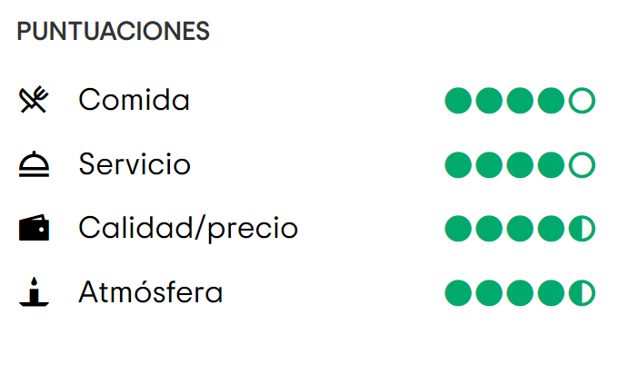
La Chulapa de Alcalá
Un local que representa fielmente la personalidad y la forma de ser madrileña. Se trata de un
espacio multifuncional donde igual puedes disfrutar de un afterwork que de un desayuno, una cena o unas tapas.
Estas tapas son totalmente innovadoras y originales, donde fusionan lo más representativo de la cocina madrileña
con elementos internacionales, consiguiendo fusiones únicas y muy estimulantes. Está junto a Cibeles, a muy pocos
pasos de Sol, y dispone de una terraza desde la que podrás disfrutar de todo el epicentro madrileño.
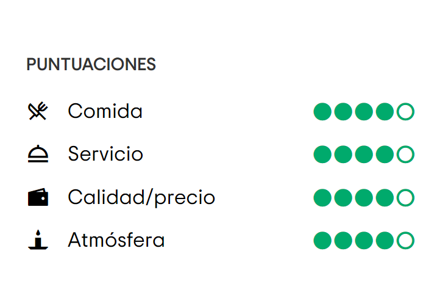
Matador
Matador representa, tanto en espíritu como en imagen, la taberna española tradicional por
excelencia, castiza y, como ellos la definen, neo-cañí. De hecho, es tal su personalidad que el turismo aún no ha
conseguido entrar y asentarse en la propuesta. Y como taberna 100% tradicional, su punto fuerte son las tapas. Un
sitio inmejorable para disfrutar de una tapita de tortilla, jamón o queso o chorizo y más platos típicos de
cocina, en un ambiente agradable, amistoso, rodeado del espíritu de las tabernas de antaño.
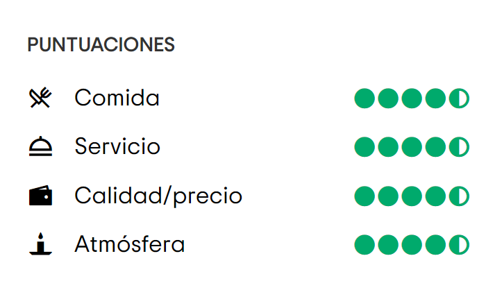
RESTAURANTES
La Taurina
La Taurina es ahora un lugar de visita obligada para disfrutar de la cultura española, tapas,
aperitivos, comidas o cenas y degustar la mejor cocina española en un ambiente taurino. Es un entorno donde se
respira tradición y cultura a través de mosaicos de la iconografía de las fiestas patrias, cientos de fotografías
del Madrid de principios del siglo XX y selecciones musicales con guitarras flamencas.
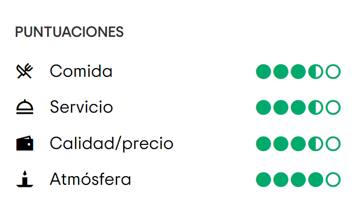
La Pulpería de Victoria
La Pulpería de Victoria es un restaurante que se encuantra a menos de un 500 metros de sol el cual
es de tradicion gallega con sus maravillosos platos gallegos como el puloo e infinidad de mariscos e incluso todo
tipo de carnes y por supuesto los postres gallegos como la tarta de Santiago. Las mesas de madera fosilizada, el
diseño industrial de sus espacios o el acceso techado son una sorpresa agradable para quien accede a este local
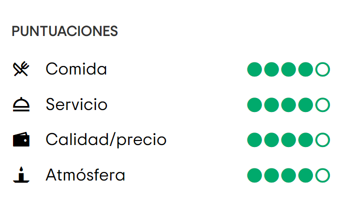
Venta el Buscón
Taberna madrileña de platos caseros y aire literario ambientada en la novela de Quevedo y el Siglo
de Oro. Un sitio muy recomendado por los turistas por sus tipicos platos españoles y con una gran variedad de
carnes y con una gran importancia por sus esquisitos postres caseros
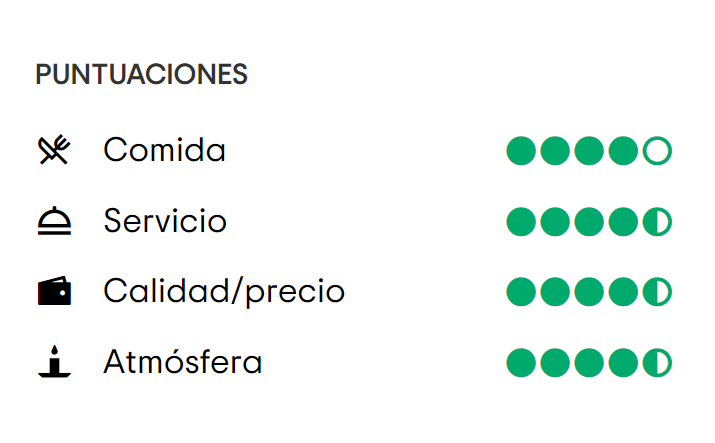
Sitios de Ocio
Essential Flamenco
El lugar es íntimo, el público está literalmente junto al escenario, rodeado por tres filas de
sillas. Sin
mesas, sin comidas, sin distracciones. Es flamenco en su estado más puro. El flamenco jondo, donde "jondo"
proviene de "hondo", fusiona, en un crisol inigualable, cinco ricas culturas musicales: el folclore andaluz
local, la influencia musical traída por los gitanos, que emigraron desde la India al sur de España en el año
1400, la música árabe procedente del año 700, junto con rasgos musicales de la cultura judía y castellana. Es
una música que alcanza el alma de manera universal.
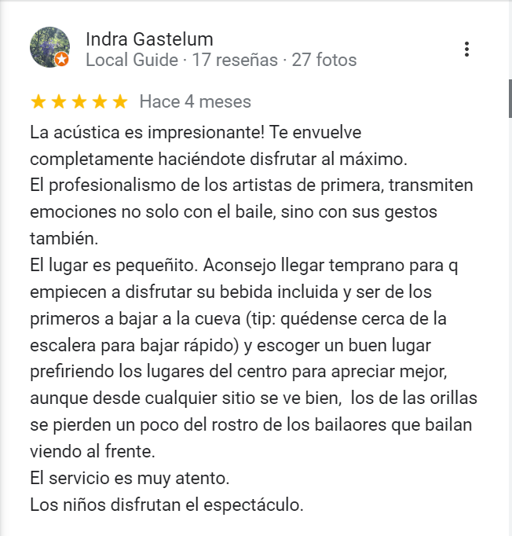
Teatro Eslava
Con más de 150 años de historia, aún lleno de energía desde el principio. Me nutro de todas las
historias que han pasado entre estas paredes, las alegrías y tristezas de miles de personas. A lo largo del tiempo,
he sido café teatro, teatro, sala de variedades y de fiestas, un lugar emblemático de la noche madrileña.
Conciertos, programas de TV, reuniones de mentes brillantes, figuras famosas y hechos históricos han dejado su
huella en mí. Hoy, renovado pero con el mismo espíritu, mi escenario es un torbellino de emociones, la música
resuena con la última tecnología, las luces crean atmósferas mágicas y las pantallas proyectan imágenes
cautivadoras. Cada rincón está lleno de vida y esperanza, listo para seguir explorando y disfrutando juntos.
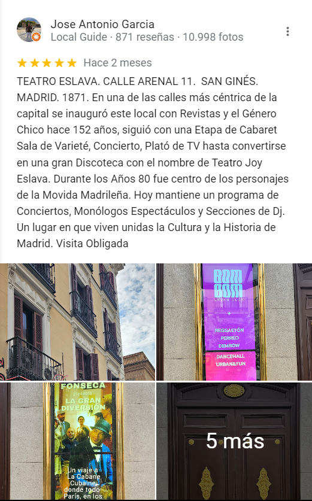
Street Escape
Street Escape ofrece escape rooms familiares en Madrid, adaptados para padres e hijos. Nuestros juegos
estimulantes y didácticos permiten aprender sobre la cultura y curiosidades de Madrid mientras resuelven acertijos.
Es una actividad al aire libre y también un desafío de escape room para niños, con diferentes niveles de dificultad
aptos para adolescentes. Fomenta la comunicación, cooperación y resolución de problemas entre la familia, creando
recuerdos inolvidables. Priorizamos la seguridad con supervisión telemática y juegos adaptados para todas las
edades. Ofrecemos flexibilidad en horarios y cambios de fecha. En resumen, es una experiencia emocionante y
divertida en el centro de Madrid.
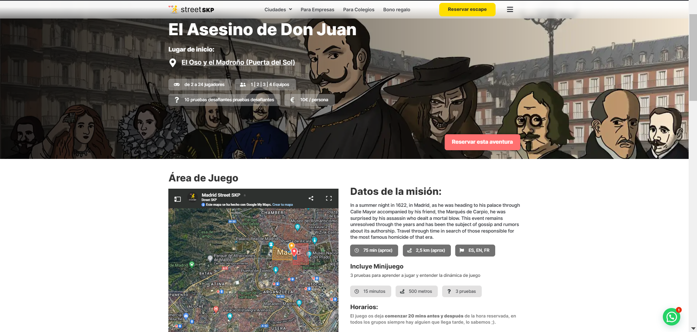
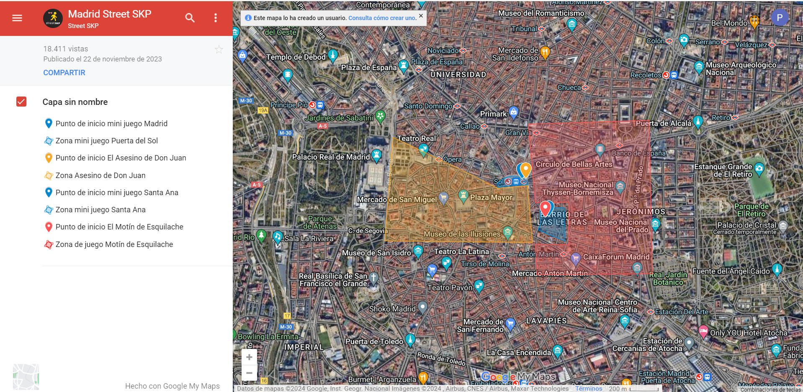
Hoteles
Acontinuación nombraremos los mejores hoteles calidad/precio, ordenados por precio, situados en la
puerta del Sol.
UMusic Hotel Madrid
El primer hotel de UMusic en Europa, está en el centro de Madrid, en la calle
La Paz, cerca de Sol. También tiene entrada por la calle Carretas y está cerca de los lugares más importantes de
la ciudad. A solo 30 minutos del aeropuerto Adolfo Suárez Madrid-Barajas, este hotel de lujo tiene 130
habitaciones y suites. Está junto al Teatro Albéniz, lo que lo hace ideal para disfrutar de experiencias musicales
únicas. Tiene una zona lounge para conciertos, espectáculos y eventos corporativos. El hotel refleja la cultura y
la gente de Madrid con un diseño que mezcla lo histórico con lo moderno, además de contar con restaurantes y bares
exclusivos.
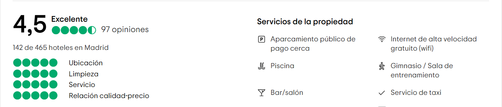
B&B HOTEL Madrid Centro Puerta del Sol
Este discreto hotel se encuentra en una calle peatonal repleta de restaurantes y tiendas, a 1 minuto a
pie de la estación de metro de Sol, a 4 minutos a pie de la bulliciosa Plaza Mayor y a 14 minutos a pie del Museo
Nacional del Prado.
Sobrias habitaciones con Wi‑Fi gratis, televisión de pantalla plana, caja fuerte, mininevera y ducha de efecto
lluvia. Las opciones superiores tienen balcón y, en algunos casos, vistas a la ciudad. Los menores de 13 años se
alojan gratis con uno de sus padres (1 por habitación).
El hotel tiene un salón alegre y funcional con café y té gratis las 24 horas.
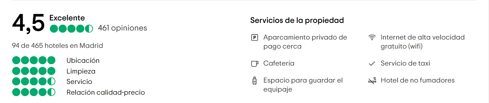
Hotel Mirador Puerta del Sol
El Hotel Mirador de la Puerta del Sol está a solo 20 metros de la famosa Puerta del Sol de Madrid y
ofrece Wi-Fi gratis. Ubicado en una calle peatonal, a solo 3 minutos caminando de la Gran Vía, tiene habitaciones
modernas con televisión, escritorio, aire acondicionado, calefacción y baño privado con ducha de hidromasaje,
artículos de aseo gratis y secador de pelo. El minibar y la caja fuerte tienen un costo adicional. Cada mañana, el
hotel ofrece un desayuno buffet. También tiene una recepción disponible las 24 horas, consigna para guardar equipaje
y una zona común de salón. A tan solo 5 minutos a pie, hay una amplia selección de bares, restaurantes, tiendas y
boutiques. Los museos de arte más famosos de Madrid, como el Prado, el Thyssen y el Reina Sofía, están a 15 minutos
caminando desde el Mirador Puerta del Sol. La estación de Atocha, que ofrece conexiones al aeropuerto de Madrid
Barajas, está a 1,5 km de distancia.
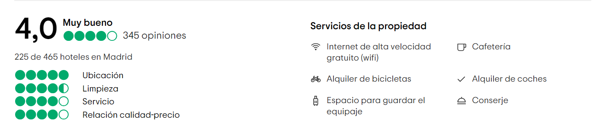